FocusRedesigned the highest-stakes screen in Wyndham’s booking flow across a franchise system, staging change deliberately to improve clarity without risking conversion. Part of a 1.5-year replatform of Wyndham’s website and mobile apps, so results are still pending.
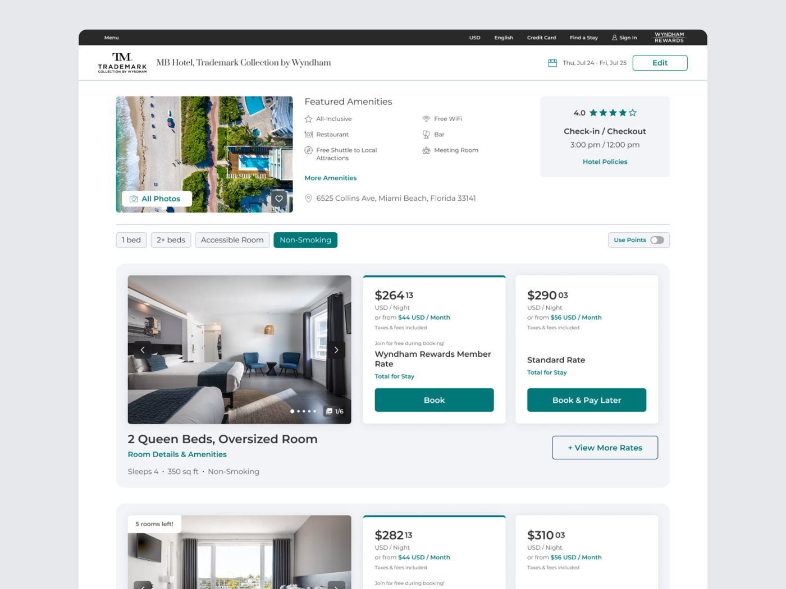
Rooms & Rates is the highest-stakes screen in Wyndham's booking flow: the moment travelers compare room types and pricing before they commit. As part of a 1.5-year effort to replatform Wyndham's entire website and mobile apps, I led the redesign of this experience across Wyndham's franchise ecosystem, weighing usability gains against conversion risk at the most sensitive step of the funnel.
Users struggled to compare rooms because of inconsistent pricing structures, dense content, and unclear hierarchy. Because Wyndham operates as a franchise system, room details and pricing vary widely from property to property, since franchisees own their own content. Previous redesigns by other designers had improved usability on paper but hurt conversion, so the organization had grown cautious about touching this flow at all. My own first redesign, A/B tested before the replatform and never implemented, ran into the same problem:
A bigger visual change didn’t move bookings, and it cost us on mobile. That result shaped every call that followed.
Objectives:
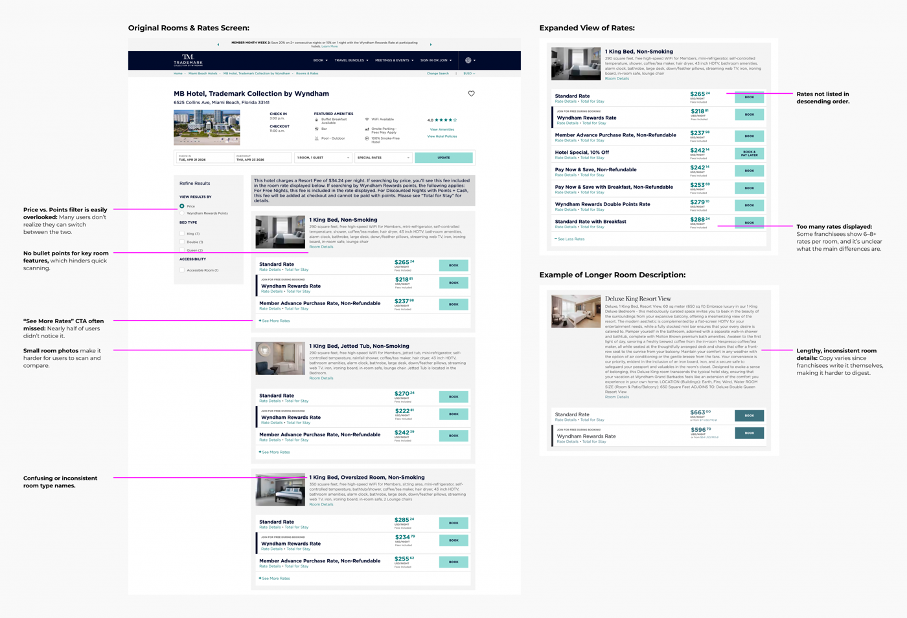
I benchmarked how major hotel and travel platforms handle room and rate selection. Two dominant patterns emerged:
Marriott, Hilton, Hyatt, IHG
Choice, plus OTAs like Expedia and Booking.com
Given the booking flow's sensitivity to conversion, I focused the near-term solution on improving clarity within the existing single-step model, while exploring modal-based rate expansion as a longer-term direction.
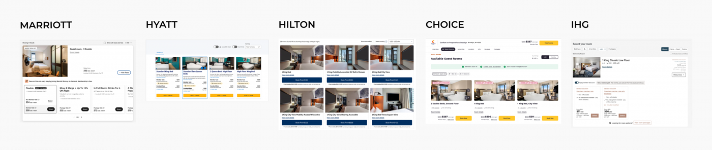
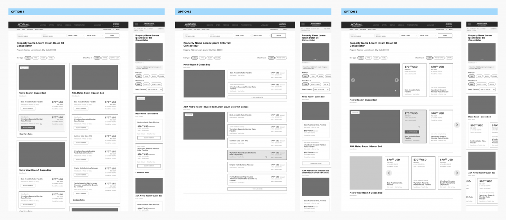
Design directions:
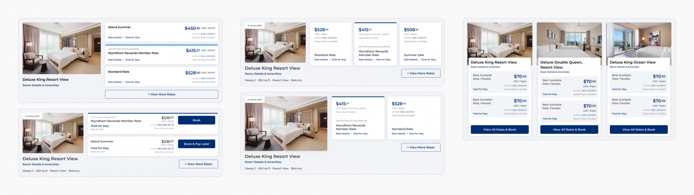
After stakeholder alignment, we moved forward with an incremental approach, refining the existing list-based layout while deferring more experimental patterns for post-launch validation, given the conversion sensitivity of the flow. Before launch, I worked with our UX researcher on a usability gut check (UserTesting), comparing the new design against the live site. The goal wasn’t to optimize. It was to confirm nothing in the new design stood out as wrong for users.
Nothing raised a red flag. Most of the friction users raised was what we’d already seen on the original design:
Because these issues weren’t new, we didn’t change the design in response. We kept it close to the current site and planned to test these pieces one at a time after launch.
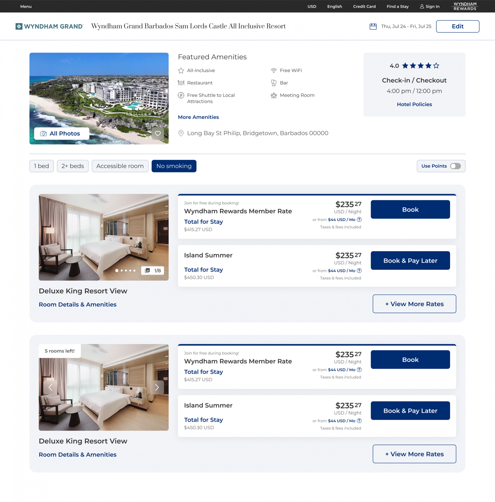
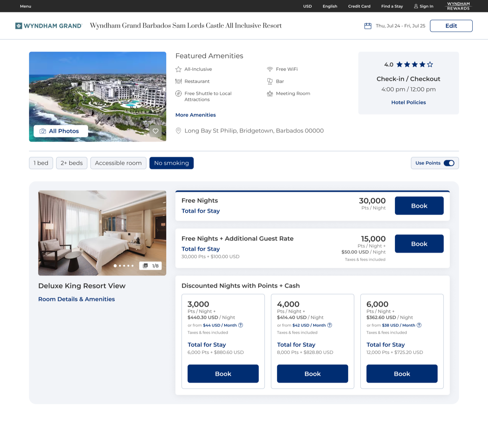
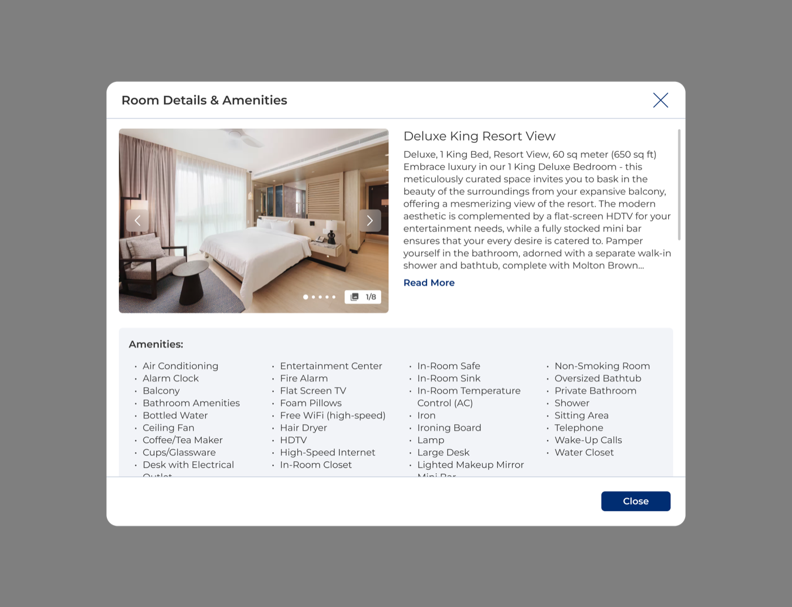
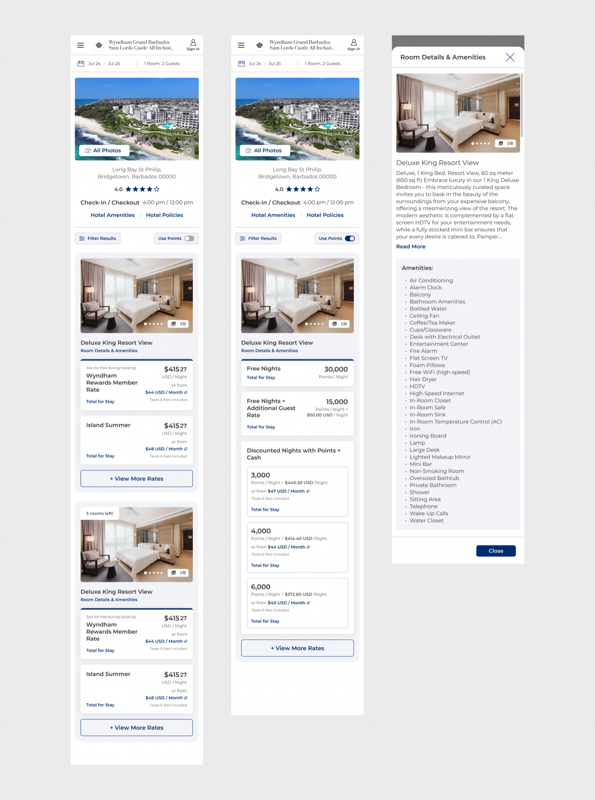
The safest move wasn't the most ambitious redesign. It was staging change deliberately in a flow where past ambition had already cost conversion.
Given the scale and complexity of a franchise-driven ecosystem, we kept the launch design close to the current site and turned what we heard in testing into a plan for incremental tests after launch:
Rooms & Rates is one piece of a 1.5-year replatform of Wyndham’s entire website and mobile apps, so results are still pending. Instead of A/B testing a full redesign again, like the one that cost mobile bookings, we kept the launch design close to the current site and will test individual changes after launch. Success means holding baseline booking performance while improving conversion, decision confidence, and rate-selection efficiency.
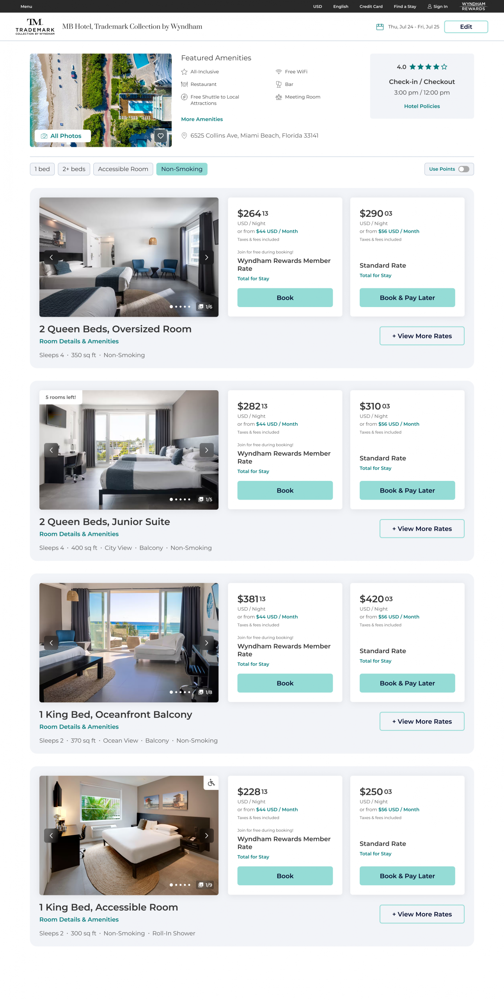
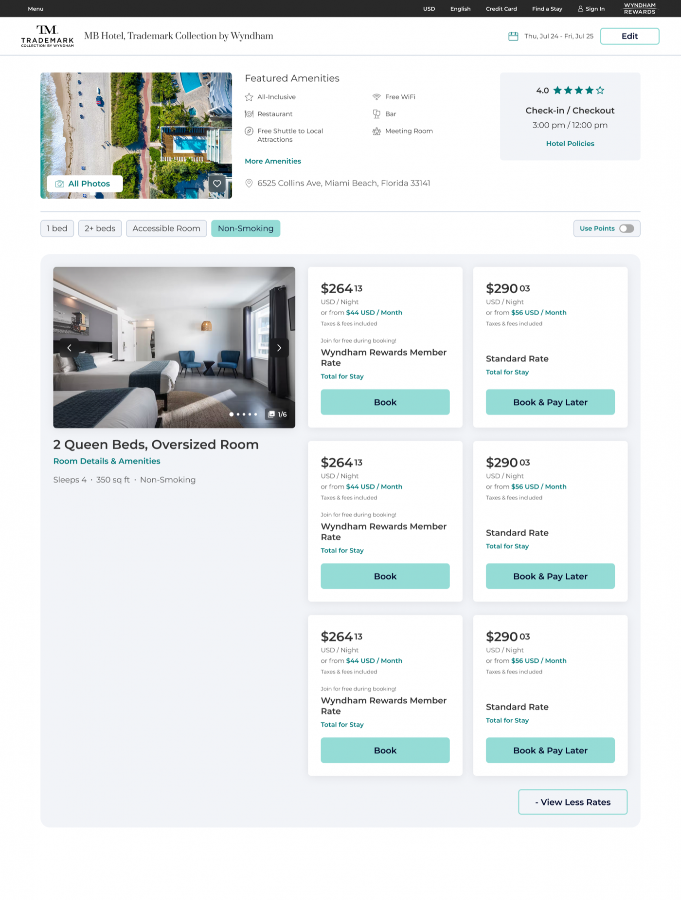